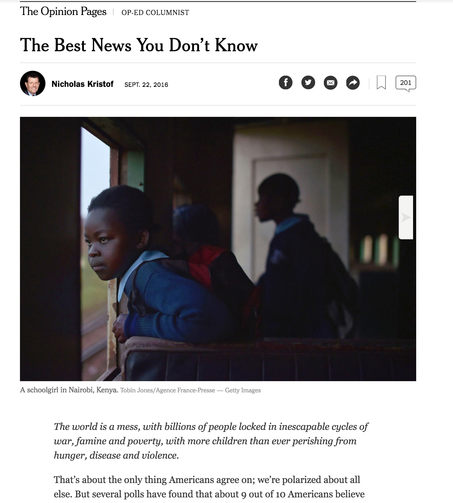
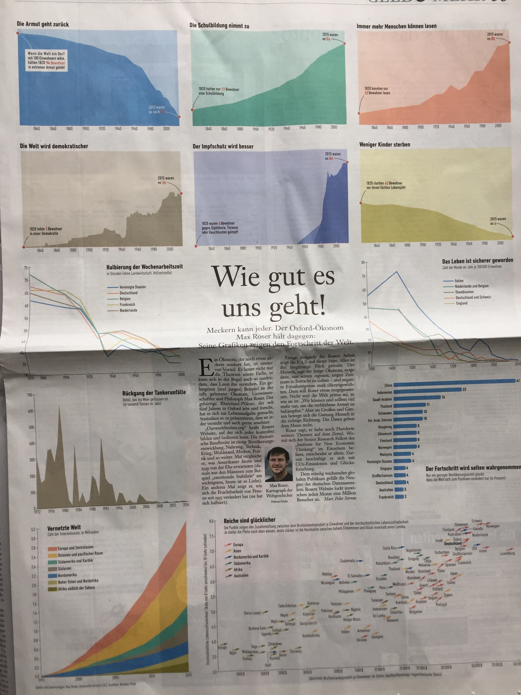
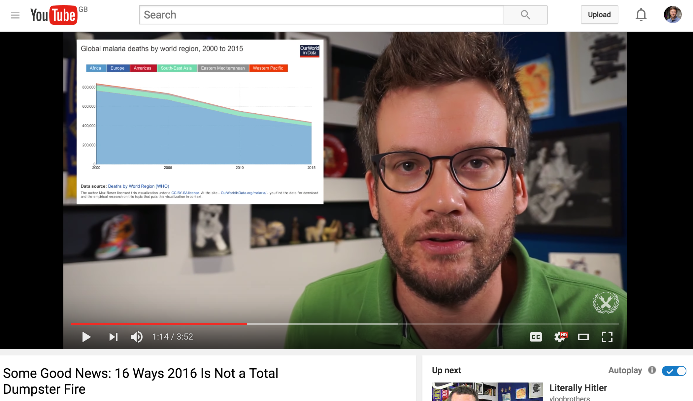
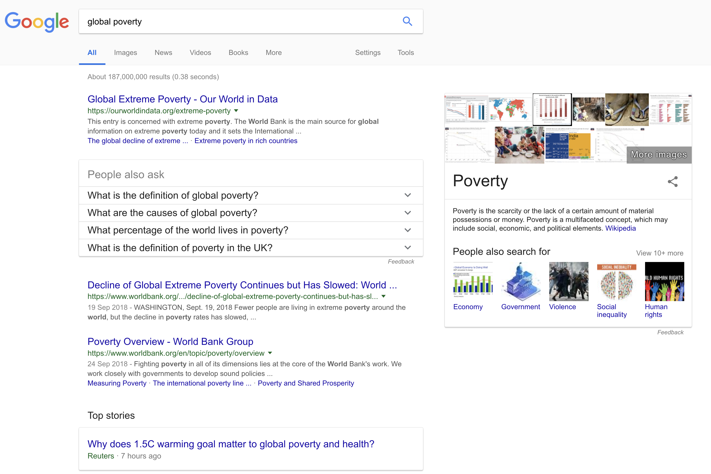
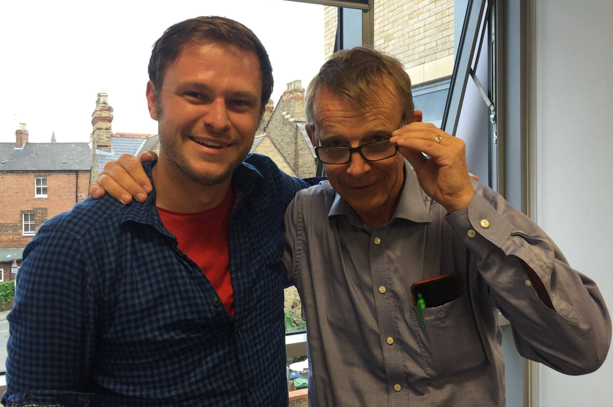
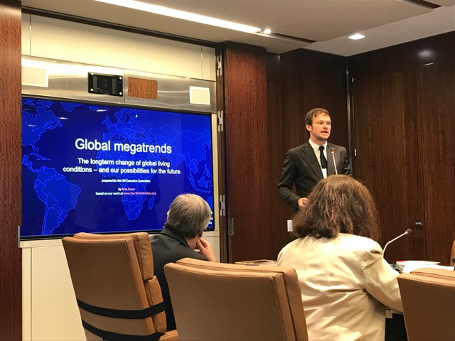
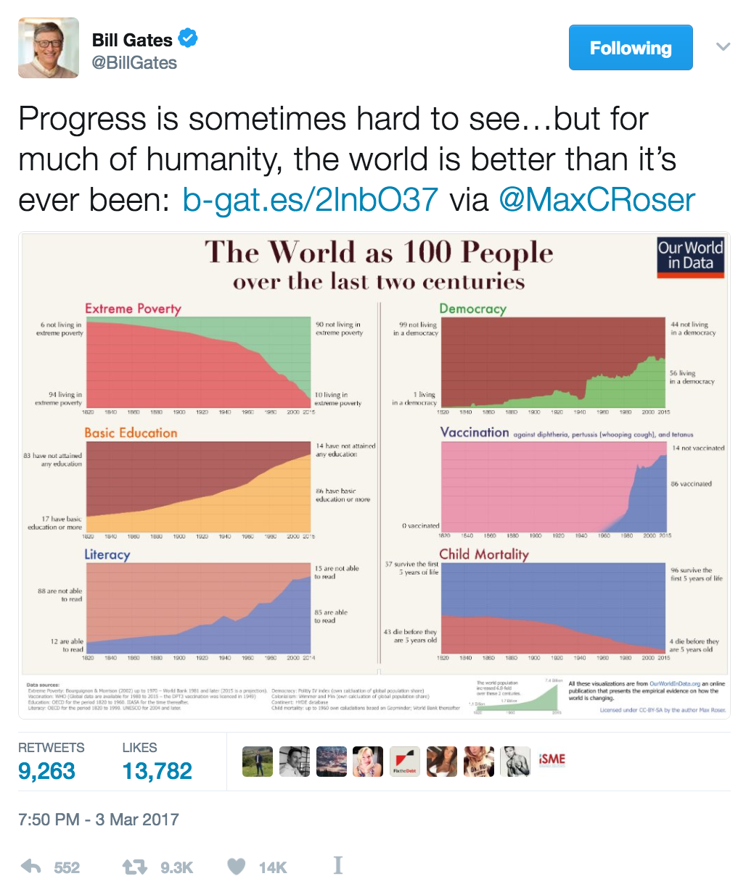
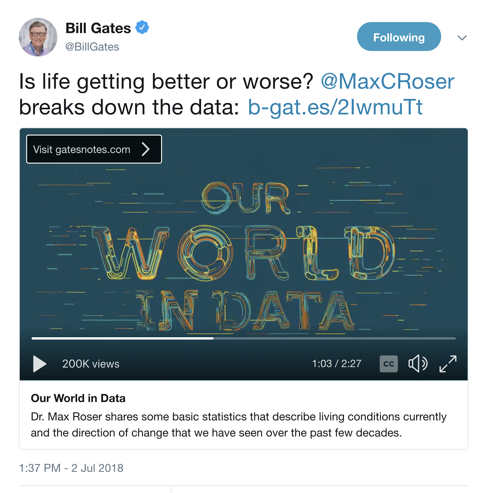
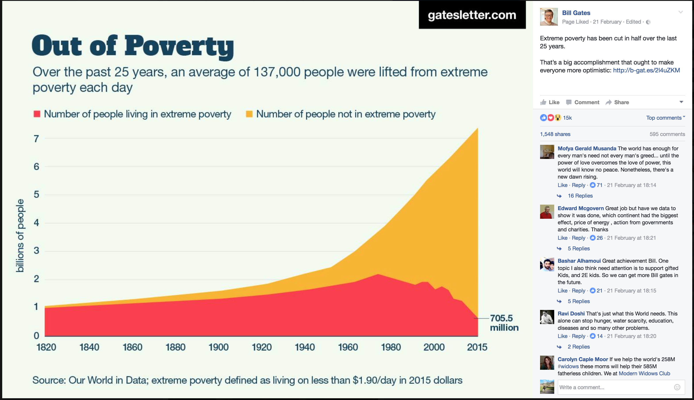
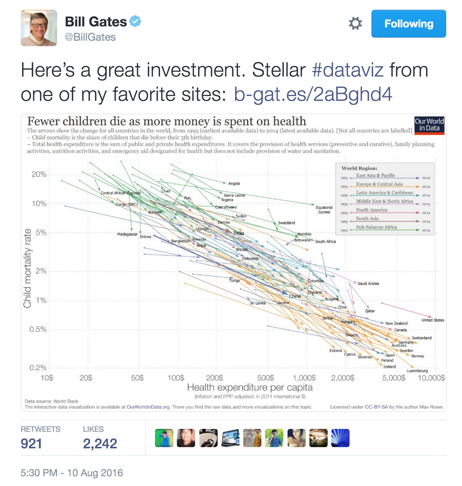

Media: New York Times article on the decline of extreme poverty.

Media: Frankfuter Allgemeine Zeitung on how our world has changed.

Research: Bill Gates' favourite book is built on OWID
Content creators: As the source for BMGF grantee 'Kurz Gesagt'
Content creators: John Green

General public: High in Google Search

Collaborations with other BMGF partners: Gapminder, CGD, Oxfam, ICTD, Kurz Gesagt,…

Research for BMGF and bgc3: UN GA material & Positive Outliers.

Material for Gates work: Blog and video this summer
Teaching material: BSG in Oxford and elsewhere

Teaching material: BSG in Oxford and elsewhere
Policy makers: Talk to the UN SG and Executive Comittee.

Direct reach of readers

“I get frustrated sometimes because my field of global development isn't taking full advantage of the power of data.”
– Melinda Gates (2015)
The news are not enough to
know how the world is changing

We need to show that change is happening

We need to communicate what we know about global
development and to pursue more of what works

We need to know where to focus our efforts

We want to communicate a broad understanding of
development – not just economic growth

We want to counter fatalism & make more of us ‘impatient optimists’